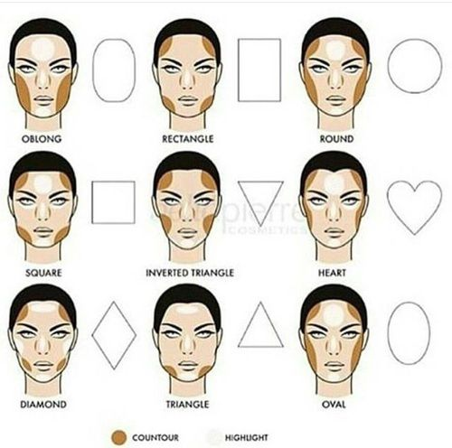
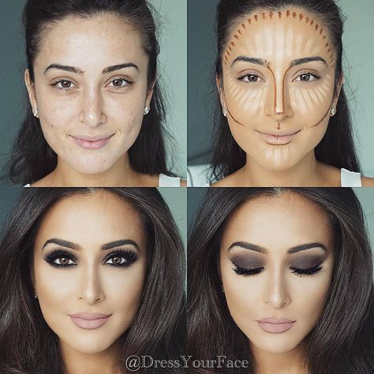
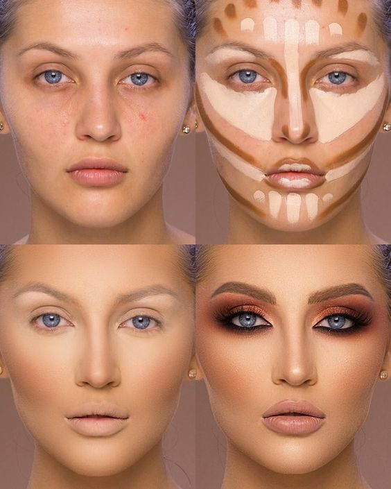
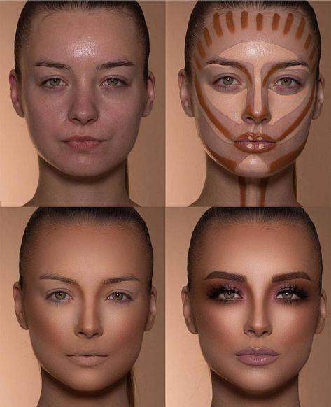
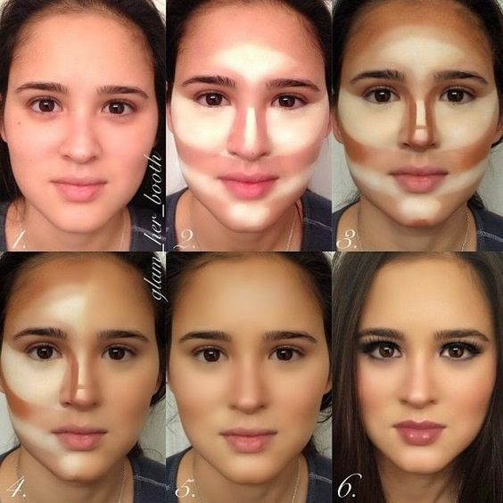
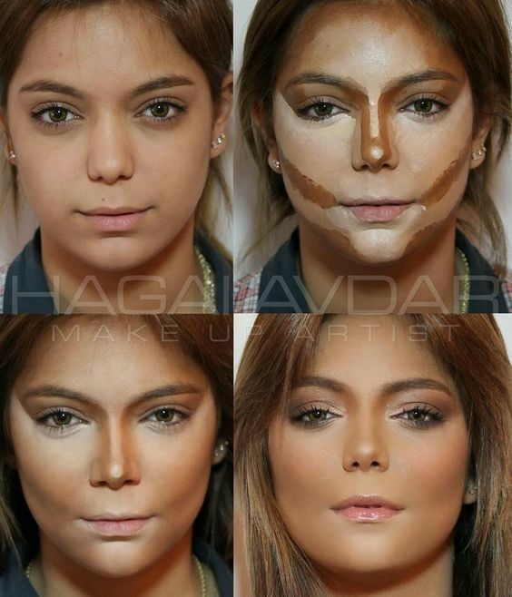
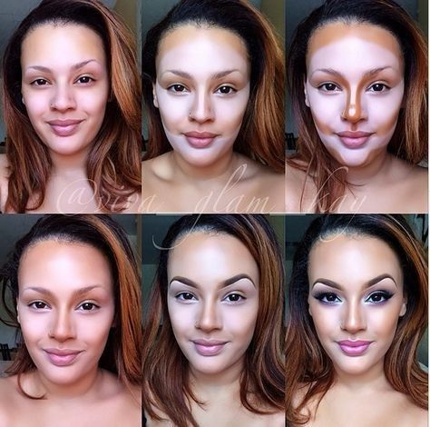
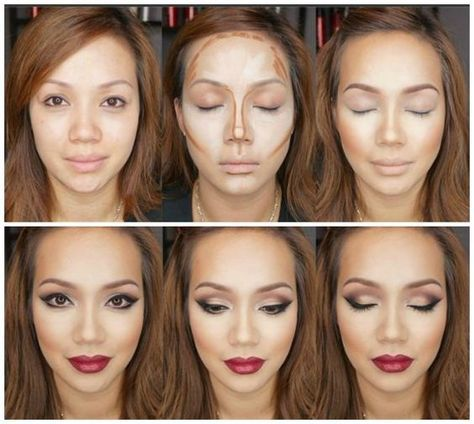
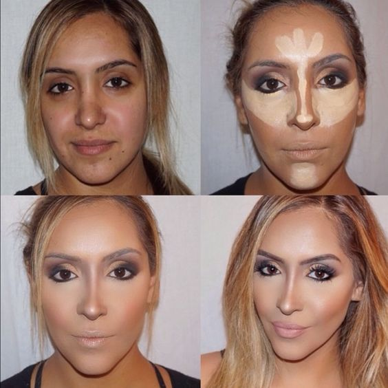

Maquillaje facial.Es una valiosa herramienta para hacerla ver fresca y radiante cada día. Hoy, el maquillaje se utiliza como "arma" de seducción.
Tal vez sea difícil imaginar el maquillaje del 1900 como moderno, pero de hecho es el comienzo de la industria cosmética tal como la conocemos hoy en día. Con el auge de los medios de comunicación masiva, la industria del maquillaje creció agigantadamente. Aunque a principios del 1900 todavía la creencia popular era asociar a la piel pálida con una vida de riqueza y placer y relacionar la piel bronceada con la clase trabajadora, gracias al viejo maquillador Max Factor, se desarrolló y se produjo el primer polvo facial perfumado para el público, convirtiendo al maquillaje facial en algo accesible para todos. La variedad abrió la puerta a los Siglos XX y XXI. Una gran demanda de fórmulas ecológicas, beneficiosas y de gran calidad hizo surgir a todo un nuevo conjunto de compañías de maquillaje: Christian Dior y Clinique, las cuales brindaban maquillajes y fórmulas clásicas para mujeres con distintos tipos de piel. Hoy en día, las fórmulas minerales y ecológicas han dominado la industria del maquillaje facial.
|  |  |  |
|  |  |  |
|  |  |  |